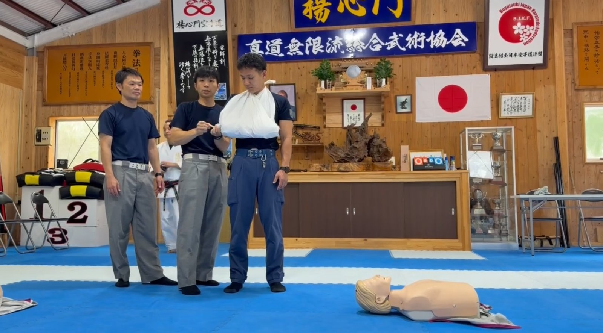
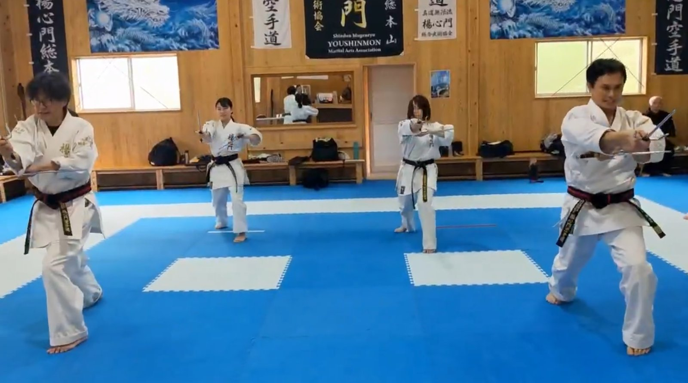
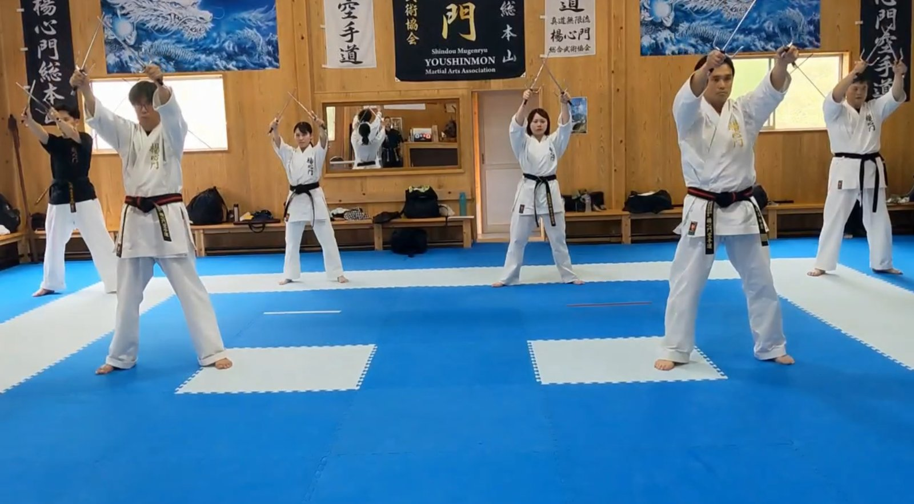
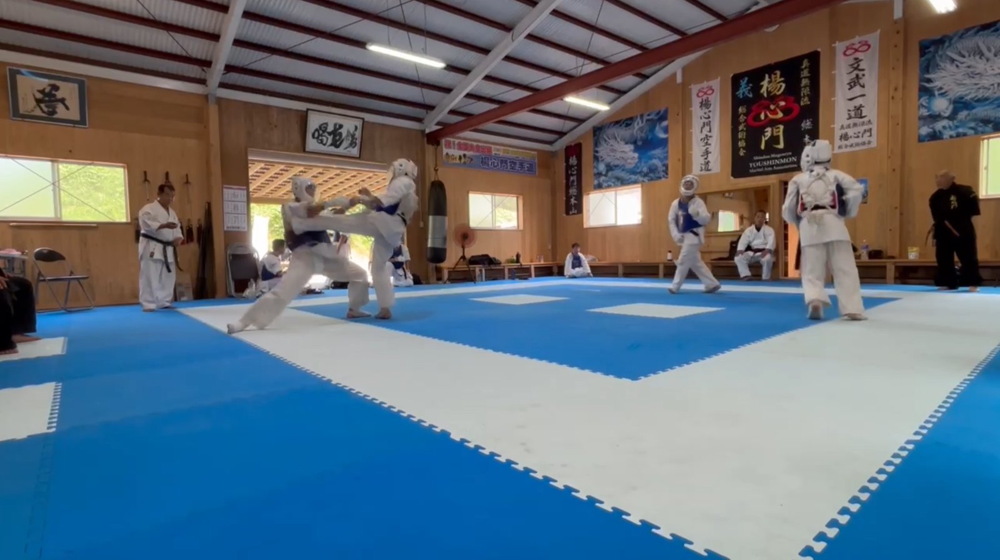
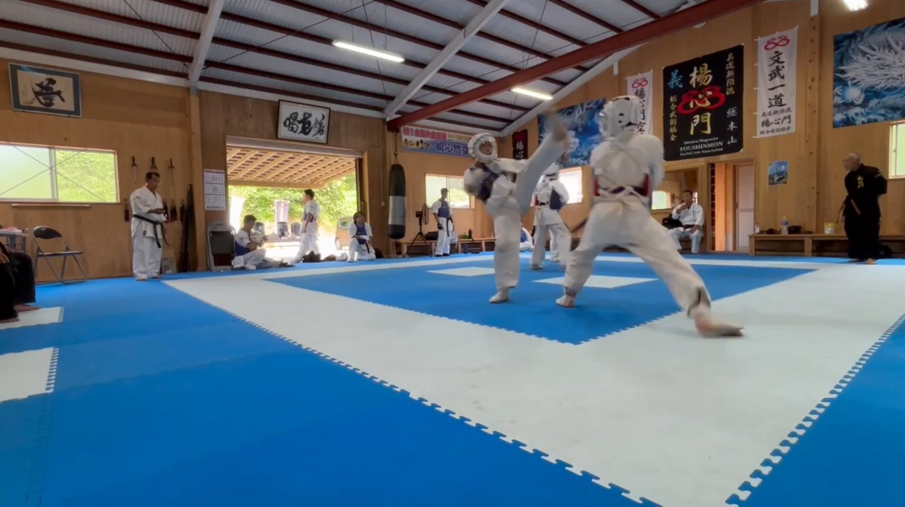
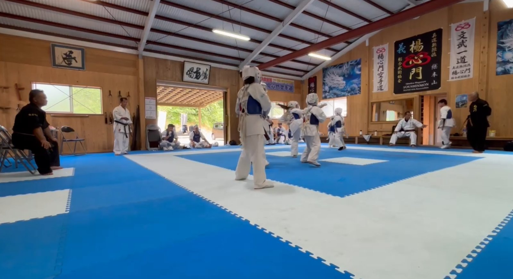
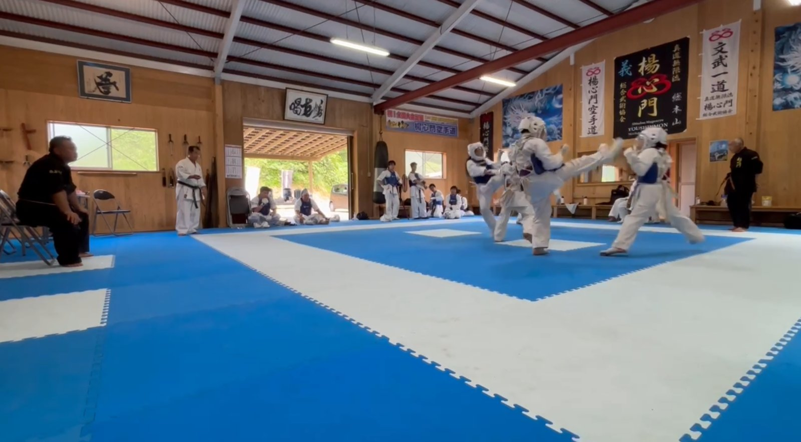

黒帯研修会・強化稽古を開催しました
７月５日、総本山道場にて、暑い中 黒帯研修会・強化稽古 を開催しました。
Safety
消防署のご指導で心肺蘇生法を学びました
これから熱中症等が心配されるため、消防署のご指導をいただき、心肺蘇生法などを学びました。安心して稽古を行える体制を整えることができました。段取りをいただきました 田中 康之 社会部長に、御礼申し上げます。

Sai-jutsu
サイ術 宗師直伝の指導がありました
サイ術※釵（さい）と呼ばれる三叉状の武器を用いた武器術は今回で２回目の研修となり、宗師直伝の指導がありました。
８月２３日、鹿屋市武道館にて開催予定の 第５回 白龍武道大会 では、無限龍拳・飛龍拳 にてサイ術演武を行う予定です。
今後、楊心門のサイ術が門下をはじめとして広く受け継がれていくことを願っております。


Training
強化稽古（第１回）を実施しました
午後からは、全日本大会出場選手による強化稽古（第１回）を実施いたしました。さらに気温が上がる中、全選手が参加し、全日本大会出場選手としての自覚と、最後まで諦めない精神力の養成に取り組みました。素晴らしい素質と可能性を持った選手団です。全日本大会を通じて大きく飛躍・成長することを願っております。



